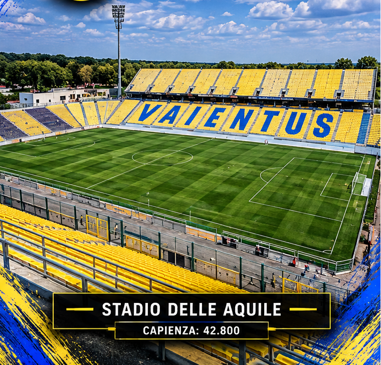
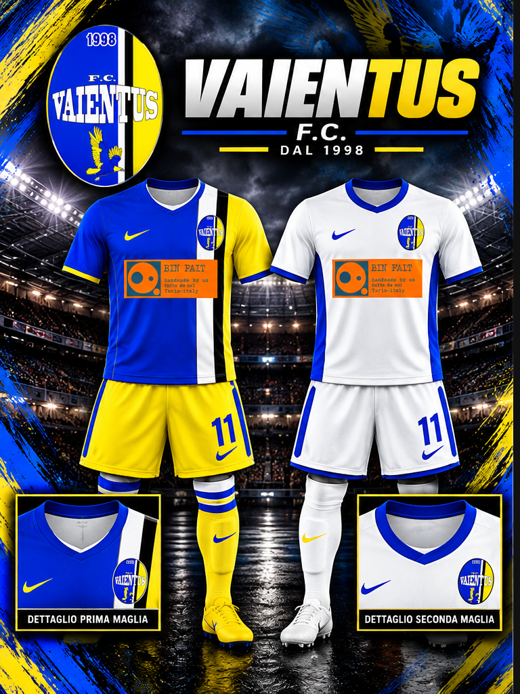

📖
La storia
Le origini, i protagonisti e i momenti più importanti della società.
SCOPRI LA STORIA →


Le origini, i protagonisti e i momenti più importanti della società.
SCOPRI LA STORIA →Calciatori, allenatori e dirigenti che hanno scritto la storia della società.
SCOPRI I PERSONAGGI →I trofei, le vittorie e i traguardi conquistati nella storia della società.
SCOPRI IL PALMARÈS →Il Vaientus F.C. è una società della LEFABAM. Sul suo stemma originale compare l’anno 1998. I colori distintivi sono il giallo e il blu, con inserti bianchi e neri. Le tappe principali della sua storia saranno aggiunte dopo la conferma dei dati ufficiali. Qui raccoglieremo il racconto delle sue stagioni, dei protagonisti e dei successi documentati.
Questa sezione potrà contenere il racconto delle origini, delle persone che hanno costruito la società e delle stagioni più importanti.
Calciatori, allenatori e dirigenti che hanno segnato la storia del Vaientus F.C. Le schede saranno aggiunte dopo la verifica dei dati.
Qui troveranno posto le tabelle delle stagioni del Vaientus F.C. e gli altri documenti storici della società.
L'archivio verrà elaborato progressivamente, mantenendo disponibili solo i dati storici effettivamente documentati.
I trofei ufficiali del Vaientus F.C. saranno inseriti dopo la conferma dell’albo d’oro.